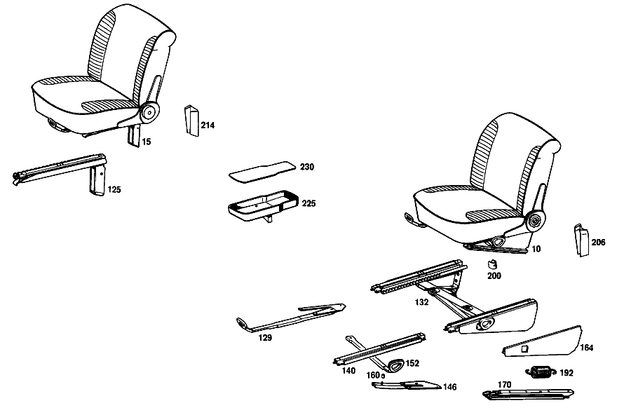

| № | Артикул | Название | Кол. | Примечание | Ограничение |
|---|---|---|---|---|---|
| 10 | A 109 910 01 01 | СИДЕНЬЕ ВОДИТЕЛЯ | - | ||
| 30 | A 109 910 00 30 | - ПОДУШКА СИДЕНЬЯ | 2 | [402] БОЛЬШЕ НЕ ПОСТАВЛЯЕТСЯ [003] STATE COLOR AND CHASSIS NO. WHEN ORDERING [018] 018 UP TO CHASSIS 004920 EXCEPT FOR, 004913, 004914; 056 UP TO CHASSIS 002604 EXCEPT FOR, SEE FOOTNOTE 20 [020] 002497, 002511, 002513, 002515, 002516, 002532, 002533, 002538, 002541, 002544, 002547, 002549, 002552, 002554- 002560, 002564- 002566, 002570, 002572, 002574, 002575, 002580, 002582, 002587, 002588, 002590, 002592, 002597, 002602. | |
| 34 | A 110 910 20 22 | - РАМА ПОДУШКИ | - | ||
| 34 | A 115 910 43 22 | - РАМА ПОДУШКИ | 2 | ||
| 37 | A 108 910 00 40 | - КОРОБ ПРУЖИНЫ | 2 | ||
| 41 | A 109 914 00 14 | - НАКЛАДКА | 2 | [018] 018 UP TO CHASSIS 004920 EXCEPT FOR, 004913, 004914; 056 UP TO CHASSIS 002604 EXCEPT FOR, SEE FOOTNOTE 20 [020] 002497, 002511, 002513, 002515, 002516, 002532, 002533, 002538, 002541, 002544, 002547, 002549, 002552, 002554- 002560, 002564- 002566, 002570, 002572, 002574, 002575, 002580, 002582, 002587, 002588, 002590, 002592, 002597, 002602. | |
| 45 | A 000 984 20 61 | - Скоба | 30 | ||
| 48 | A 109 910 00 46 | - ОБИВКА | 2 | [402] БОЛЬШЕ НЕ ПОСТАВЛЯЕТСЯ [003] STATE COLOR AND CHASSIS NO. WHEN ORDERING [018] 018 UP TO CHASSIS 004920 EXCEPT FOR, 004913, 004914; 056 UP TO CHASSIS 002604 EXCEPT FOR, SEE FOOTNOTE 20 [020] 002497, 002511, 002513, 002515, 002516, 002532, 002533, 002538, 002541, 002544, 002547, 002549, 002552, 002554- 002560, 002564- 002566, 002570, 002572, 002574, 002575, 002580, 002582, 002587, 002588, 002590, 002592, 002597, 002602. | |
| 54 | A 109 910 28 32 | - СПИНКА СИДЕНЬЯ | 2 | [402] БОЛЬШЕ НЕ ПОСТАВЛЯЕТСЯ [003] STATE COLOR AND CHASSIS NO. WHEN ORDERING [025] WHEN ORDERING, PLEASE STATE WHETHER FRONT SEAT BACKREST SHOULD BE MADE READY FOR INSTALLATION OF HEADREST [002] 015FROM CHASSIS 002131 [018] 018 UP TO CHASSIS 004920 EXCEPT FOR, 004913, 004914; 056 UP TO CHASSIS 002604 EXCEPT FOR, SEE FOOTNOTE 20 [020] 002497, 002511, 002513, 002515, 002516, 002532, 002533, 002538, 002541, 002544, 002547, 002549, 002552, 002554- 002560, 002564- 002566, 002570, 002572, 002574, 002575, 002580, 002582, 002587, 002588, 002590, 002592, 002597, 002602. | |
| 62 | A 109 914 00 16 | - НАКЛАДКА | 2 | [018] 018 UP TO CHASSIS 004920 EXCEPT FOR, 004913, 004914; 056 UP TO CHASSIS 002604 EXCEPT FOR, SEE FOOTNOTE 20 [020] 002497, 002511, 002513, 002515, 002516, 002532, 002533, 002538, 002541, 002544, 002547, 002549, 002552, 002554- 002560, 002564- 002566, 002570, 002572, 002574, 002575, 002580, 002582, 002587, 002588, 002590, 002592, 002597, 002602. | |
| 66 | A 109 910 30 47 | - ОБИВКА | 2 | [402] БОЛЬШЕ НЕ ПОСТАВЛЯЕТСЯ [003] STATE COLOR AND CHASSIS NO. WHEN ORDERING [018] 018 UP TO CHASSIS 004920 EXCEPT FOR, 004913, 004914; 056 UP TO CHASSIS 002604 EXCEPT FOR, SEE FOOTNOTE 20 [020] 002497, 002511, 002513, 002515, 002516, 002532, 002533, 002538, 002541, 002544, 002547, 002549, 002552, 002554- 002560, 002564- 002566, 002570, 002572, 002574, 002575, 002580, 002582, 002587, 002588, 002590, 002592, 002597, 002602. | |
| 70 | A 003 988 01 78 | - Зажимная скоба | 10 | [019] 018 FROM CHASSIS 004921 ALSO INSTALLED ON 004913, 004914; 056 FROM CHASSIS 002605 ALSO INSTALLED ON, SEE FOOTNOTE 20 [020] 002497, 002511, 002513, 002515, 002516, 002532, 002533, 002538, 002541, 002544, 002547, 002549, 002552, 002554- 002560, 002564- 002566, 002570, 002572, 002574, 002575, 002580, 002582, 002587, 002588, 002590, 002592, 002597, 002602. | |
| 100 | A 000 910 63 85 | - Рег. спинки сиденья | 1 | СНАРУЖИ СЛЕВА [012] 016 FROM CHASSIS 001576; 018 FROM CHASSIS 001553 | |
| 108 | A 000 918 02 36 | - ПАНЕЛЬ | 2 | [002] 015FROM CHASSIS 002131 | |
| 111 | A 000 994 12 60 | - ПРЕДОХРАНИТЕЛЬ | 8 | [012] 016 FROM CHASSIS 001576; 018 FROM CHASSIS 001553 | |
| 115 | A 000 994 13 60 | - Скоба | 8 | [012] 016 FROM CHASSIS 001576; 018 FROM CHASSIS 001553 | |
| 125 | A 108 910 02 05 | - НАПРАВЛЯЮЩАЯ СИДЕНЬЯ | 1 | ВНУТРИ СПРАВА Рулевое управление: Влево | |
| 129 | A 113 910 01 05 | - ФИКСАТОР | 1 | СЛЕВА | |
| 140 | A 108 910 13 05 | - НАПРАВЛЯЮЩАЯ СИДЕНЬЯ | 0 | СВЕРХУ | |
| 140 | A 108 910 13 05 | - НАПРАВЛЯЮЩАЯ СИДЕНЬЯ | 1 | СЛЕВА Рулевое управление: Влево | |
| 140 | A 108 910 13 05 | - НАПРАВЛЯЮЩАЯ СИДЕНЬЯ | 1 | СПРАВА Рулевое управление: Вправо | |
| 160 | A 108 919 00 33 | - РАСПОРН. ТРУБКА | - | ||
| 160 | A 116 919 00 33 | - РАСПОРН. ТРУБКА | 1 | ||
| 164 | A 108 910 01 18 | - ПАНЕЛЬ | 1 | СЛЕВА Рулевое управление: Влево [022] 018 UP TO CHASSIS 004346; 056 UP TO CHASSIS 001589 | |
| 180 | A 108 913 01 28 | - ПАНЕЛЬ | - | ||
| 180 | A 115 913 27 28 | - ПАНЕЛЬ | 2 | AT UPPER PART,LEFT [002] 015FROM CHASSIS 002131 [011] 016 UP TO CHASSIS 001575; 018 UP TO CHASSIS 001552 | |
| 184 | A 108 913 03 28 | - ПАНЕЛЬ | - | ||
| 192 | A 108 919 03 37 | пружина | 1 | ||
| 200 | A 108 919 00 17 | ПРОСТАВКА | - | ||
| 206 | A 108 919 18 20 | ПАНЕЛЬ | 1 | INSIDE, LEFT FRONT SEAT Рулевое управление: Влево [003] STATE COLOR AND CHASSIS NO. WHEN ORDERING | |
| 214 | A 108 919 07 20 | ПАНЕЛЬ | - | ||
| A 109 910 02 01 | СИДЕНЬЕ ВОДИТЕЛЯ | - | |||
| A 109 910 07 09 | СИДЕНЬЕ ВОДИТЕЛЯ | 1 | СЛЕВА Рулевое управление: Влево [003] STATE COLOR AND CHASSIS NO. WHEN ORDERING [025] WHEN ORDERING, PLEASE STATE WHETHER FRONT SEAT BACKREST SHOULD BE MADE READY FOR INSTALLATION OF HEADREST [002] 015FROM CHASSIS 002131 [009] 016 UP TO CHASSIS 000924; 018 UP TO CHASSIS 000263 | ||
| A 109 910 09 09 | СИДЕНЬЕ ВОДИТЕЛЯ | 1 | СЛЕВА Рулевое управление: Вправо [003] STATE COLOR AND CHASSIS NO. WHEN ORDERING [025] WHEN ORDERING, PLEASE STATE WHETHER FRONT SEAT BACKREST SHOULD BE MADE READY FOR INSTALLATION OF HEADREST [002] 015FROM CHASSIS 002131 [009] 016 UP TO CHASSIS 000924; 018 UP TO CHASSIS 000263 | ||
| A 109 910 10 09 | СИДЕНЬЕ ВОДИТЕЛЯ | 1 | СПРАВА Рулевое управление: Влево [003] STATE COLOR AND CHASSIS NO. WHEN ORDERING [025] WHEN ORDERING, PLEASE STATE WHETHER FRONT SEAT BACKREST SHOULD BE MADE READY FOR INSTALLATION OF HEADREST [002] 015FROM CHASSIS 002131 [009] 016 UP TO CHASSIS 000924; 018 UP TO CHASSIS 000263 | ||
| A 109 910 08 09 | СИДЕНЬЕ ВОДИТЕЛЯ | 1 | СПРАВА Рулевое управление: Вправо [003] STATE COLOR AND CHASSIS NO. WHEN ORDERING [025] WHEN ORDERING, PLEASE STATE WHETHER FRONT SEAT BACKREST SHOULD BE MADE READY FOR INSTALLATION OF HEADREST [002] 015FROM CHASSIS 002131 [009] 016 UP TO CHASSIS 000924; 018 UP TO CHASSIS 000263 | ||
| A 109 910 03 12 | СИДЕНЬЕ ВОДИТЕЛЯ | 1 | СЛЕВА Рулевое управление: Влево [402] БОЛЬШЕ НЕ ПОСТАВЛЯЕТСЯ [003] STATE COLOR AND CHASSIS NO. WHEN ORDERING [025] WHEN ORDERING, PLEASE STATE WHETHER FRONT SEAT BACKREST SHOULD BE MADE READY FOR INSTALLATION OF HEADREST [010] 016 FROM CHASSIS 000925; 018 FROM CHASSIS 000264 [011] 016 UP TO CHASSIS 001575; 018 UP TO CHASSIS 001552 | ||
| A 109 910 04 12 | СИДЕНЬЕ ВОДИТЕЛЯ | 1 | СПРАВА Рулевое управление: Вправо [402] БОЛЬШЕ НЕ ПОСТАВЛЯЕТСЯ [003] STATE COLOR AND CHASSIS NO. WHEN ORDERING [025] WHEN ORDERING, PLEASE STATE WHETHER FRONT SEAT BACKREST SHOULD BE MADE READY FOR INSTALLATION OF HEADREST [010] 016 FROM CHASSIS 000925; 018 FROM CHASSIS 000264 [011] 016 UP TO CHASSIS 001575; 018 UP TO CHASSIS 001552 | ||
| A 109 910 05 12 | СИДЕНЬЕ ВОДИТЕЛЯ | 1 | СЛЕВА Рулевое управление: Вправо [402] БОЛЬШЕ НЕ ПОСТАВЛЯЕТСЯ [003] STATE COLOR AND CHASSIS NO. WHEN ORDERING [025] WHEN ORDERING, PLEASE STATE WHETHER FRONT SEAT BACKREST SHOULD BE MADE READY FOR INSTALLATION OF HEADREST [010] 016 FROM CHASSIS 000925; 018 FROM CHASSIS 000264 [011] 016 UP TO CHASSIS 001575; 018 UP TO CHASSIS 001552 | ||
| A 109 910 06 12 | СИДЕНЬЕ ВОДИТЕЛЯ | 1 | СПРАВА Рулевое управление: Влево [402] БОЛЬШЕ НЕ ПОСТАВЛЯЕТСЯ [003] STATE COLOR AND CHASSIS NO. WHEN ORDERING [025] WHEN ORDERING, PLEASE STATE WHETHER FRONT SEAT BACKREST SHOULD BE MADE READY FOR INSTALLATION OF HEADREST [010] 016 FROM CHASSIS 000925; 018 FROM CHASSIS 000264 [011] 016 UP TO CHASSIS 001575; 018 UP TO CHASSIS 001552 | ||
| A 109 910 95 09 | СИДЕНЬЕ ВОДИТЕЛЯ | 1 | СЛЕВА Рулевое управление: Влево [402] БОЛЬШЕ НЕ ПОСТАВЛЯЕТСЯ [003] STATE COLOR AND CHASSIS NO. WHEN ORDERING [025] WHEN ORDERING, PLEASE STATE WHETHER FRONT SEAT BACKREST SHOULD BE MADE READY FOR INSTALLATION OF HEADREST [012] 016 FROM CHASSIS 001576; 018 FROM CHASSIS 001553 [018] 018 UP TO CHASSIS 004920 EXCEPT FOR, 004913, 004914; 056 UP TO CHASSIS 002604 EXCEPT FOR, SEE FOOTNOTE 20 [020] 002497, 002511, 002513, 002515, 002516, 002532, 002533, 002538, 002541, 002544, 002547, 002549, 002552, 002554- 002560, 002564- 002566, 002570, 002572, 002574, 002575, 002580, 002582, 002587, 002588, 002590, 002592, 002597, 002602. | ||
| A 109 910 96 09 | СИДЕНЬЕ ВОДИТЕЛЯ | 1 | СПРАВА Рулевое управление: Вправо [402] БОЛЬШЕ НЕ ПОСТАВЛЯЕТСЯ [003] STATE COLOR AND CHASSIS NO. WHEN ORDERING [025] WHEN ORDERING, PLEASE STATE WHETHER FRONT SEAT BACKREST SHOULD BE MADE READY FOR INSTALLATION OF HEADREST [012] 016 FROM CHASSIS 001576; 018 FROM CHASSIS 001553 [018] 018 UP TO CHASSIS 004920 EXCEPT FOR, 004913, 004914; 056 UP TO CHASSIS 002604 EXCEPT FOR, SEE FOOTNOTE 20 [020] 002497, 002511, 002513, 002515, 002516, 002532, 002533, 002538, 002541, 002544, 002547, 002549, 002552, 002554- 002560, 002564- 002566, 002570, 002572, 002574, 002575, 002580, 002582, 002587, 002588, 002590, 002592, 002597, 002602. | ||
| A 109 910 97 09 | СИДЕНЬЕ ВОДИТЕЛЯ | 1 | СЛЕВА Рулевое управление: Вправо [402] БОЛЬШЕ НЕ ПОСТАВЛЯЕТСЯ [003] STATE COLOR AND CHASSIS NO. WHEN ORDERING [025] WHEN ORDERING, PLEASE STATE WHETHER FRONT SEAT BACKREST SHOULD BE MADE READY FOR INSTALLATION OF HEADREST [012] 016 FROM CHASSIS 001576; 018 FROM CHASSIS 001553 [018] 018 UP TO CHASSIS 004920 EXCEPT FOR, 004913, 004914; 056 UP TO CHASSIS 002604 EXCEPT FOR, SEE FOOTNOTE 20 [020] 002497, 002511, 002513, 002515, 002516, 002532, 002533, 002538, 002541, 002544, 002547, 002549, 002552, 002554- 002560, 002564- 002566, 002570, 002572, 002574, 002575, 002580, 002582, 002587, 002588, 002590, 002592, 002597, 002602. | ||
| A 109 910 98 09 | СИДЕНЬЕ ВОДИТЕЛЯ | 1 | СПРАВА Рулевое управление: Влево [402] БОЛЬШЕ НЕ ПОСТАВЛЯЕТСЯ [003] STATE COLOR AND CHASSIS NO. WHEN ORDERING [025] WHEN ORDERING, PLEASE STATE WHETHER FRONT SEAT BACKREST SHOULD BE MADE READY FOR INSTALLATION OF HEADREST [012] 016 FROM CHASSIS 001576; 018 FROM CHASSIS 001553 [018] 018 UP TO CHASSIS 004920 EXCEPT FOR, 004913, 004914; 056 UP TO CHASSIS 002604 EXCEPT FOR, SEE FOOTNOTE 20 [020] 002497, 002511, 002513, 002515, 002516, 002532, 002533, 002538, 002541, 002544, 002547, 002549, 002552, 002554- 002560, 002564- 002566, 002570, 002572, 002574, 002575, 002580, 002582, 002587, 002588, 002590, 002592, 002597, 002602. | ||
| A 109 910 77 12 | СИДЕНЬЕ ВОДИТЕЛЯ | 1 | СЛЕВА Рулевое управление: Влево [402] БОЛЬШЕ НЕ ПОСТАВЛЯЕТСЯ [003] STATE COLOR AND CHASSIS NO. WHEN ORDERING [025] WHEN ORDERING, PLEASE STATE WHETHER FRONT SEAT BACKREST SHOULD BE MADE READY FOR INSTALLATION OF HEADREST [019] 018 FROM CHASSIS 004921 ALSO INSTALLED ON 004913, 004914; 056 FROM CHASSIS 002605 ALSO INSTALLED ON, SEE FOOTNOTE 20 [020] 002497, 002511, 002513, 002515, 002516, 002532, 002533, 002538, 002541, 002544, 002547, 002549, 002552, 002554- 002560, 002564- 002566, 002570, 002572, 002574, 002575, 002580, 002582, 002587, 002588, 002590, 002592, 002597, 002602. | ||
| A 109 910 78 12 | СИДЕНЬЕ ВОДИТЕЛЯ | 1 | СПРАВА Рулевое управление: Вправо [402] БОЛЬШЕ НЕ ПОСТАВЛЯЕТСЯ [003] STATE COLOR AND CHASSIS NO. WHEN ORDERING [025] WHEN ORDERING, PLEASE STATE WHETHER FRONT SEAT BACKREST SHOULD BE MADE READY FOR INSTALLATION OF HEADREST [019] 018 FROM CHASSIS 004921 ALSO INSTALLED ON 004913, 004914; 056 FROM CHASSIS 002605 ALSO INSTALLED ON, SEE FOOTNOTE 20 [020] 002497, 002511, 002513, 002515, 002516, 002532, 002533, 002538, 002541, 002544, 002547, 002549, 002552, 002554- 002560, 002564- 002566, 002570, 002572, 002574, 002575, 002580, 002582, 002587, 002588, 002590, 002592, 002597, 002602. | ||
| A 109 910 79 12 | СИДЕНЬЕ ВОДИТЕЛЯ | 1 | СЛЕВА Рулевое управление: Вправо [402] БОЛЬШЕ НЕ ПОСТАВЛЯЕТСЯ [003] STATE COLOR AND CHASSIS NO. WHEN ORDERING [025] WHEN ORDERING, PLEASE STATE WHETHER FRONT SEAT BACKREST SHOULD BE MADE READY FOR INSTALLATION OF HEADREST [019] 018 FROM CHASSIS 004921 ALSO INSTALLED ON 004913, 004914; 056 FROM CHASSIS 002605 ALSO INSTALLED ON, SEE FOOTNOTE 20 [020] 002497, 002511, 002513, 002515, 002516, 002532, 002533, 002538, 002541, 002544, 002547, 002549, 002552, 002554- 002560, 002564- 002566, 002570, 002572, 002574, 002575, 002580, 002582, 002587, 002588, 002590, 002592, 002597, 002602. | ||
| A 109 910 80 12 | СИДЕНЬЕ ВОДИТЕЛЯ | 1 | СПРАВА Рулевое управление: Влево [402] БОЛЬШЕ НЕ ПОСТАВЛЯЕТСЯ [003] STATE COLOR AND CHASSIS NO. WHEN ORDERING [025] WHEN ORDERING, PLEASE STATE WHETHER FRONT SEAT BACKREST SHOULD BE MADE READY FOR INSTALLATION OF HEADREST [019] 018 FROM CHASSIS 004921 ALSO INSTALLED ON 004913, 004914; 056 FROM CHASSIS 002605 ALSO INSTALLED ON, SEE FOOTNOTE 20 [020] 002497, 002511, 002513, 002515, 002516, 002532, 002533, 002538, 002541, 002544, 002547, 002549, 002552, 002554- 002560, 002564- 002566, 002570, 002572, 002574, 002575, 002580, 002582, 002587, 002588, 002590, 002592, 002597, 002602. | ||
| A 109 910 16 30 | - ПОДУШКА СИДЕНЬЯ | 2 | [402] БОЛЬШЕ НЕ ПОСТАВЛЯЕТСЯ [003] STATE COLOR AND CHASSIS NO. WHEN ORDERING [019] 018 FROM CHASSIS 004921 ALSO INSTALLED ON 004913, 004914; 056 FROM CHASSIS 002605 ALSO INSTALLED ON, SEE FOOTNOTE 20 [020] 002497, 002511, 002513, 002515, 002516, 002532, 002533, 002538, 002541, 002544, 002547, 002549, 002552, 002554- 002560, 002564- 002566, 002570, 002572, 002574, 002575, 002580, 002582, 002587, 002588, 002590, 002592, 002597, 002602. | ||
| A 108 914 17 14 | - НАКЛАДКА | 2 | [019] 018 FROM CHASSIS 004921 ALSO INSTALLED ON 004913, 004914; 056 FROM CHASSIS 002605 ALSO INSTALLED ON, SEE FOOTNOTE 20 [020] 002497, 002511, 002513, 002515, 002516, 002532, 002533, 002538, 002541, 002544, 002547, 002549, 002552, 002554- 002560, 002564- 002566, 002570, 002572, 002574, 002575, 002580, 002582, 002587, 002588, 002590, 002592, 002597, 002602. | ||
| A 109 910 55 46 | - ОБИВКА | 2 | [402] БОЛЬШЕ НЕ ПОСТАВЛЯЕТСЯ [003] STATE COLOR AND CHASSIS NO. WHEN ORDERING [019] 018 FROM CHASSIS 004921 ALSO INSTALLED ON 004913, 004914; 056 FROM CHASSIS 002605 ALSO INSTALLED ON, SEE FOOTNOTE 20 [020] 002497, 002511, 002513, 002515, 002516, 002532, 002533, 002538, 002541, 002544, 002547, 002549, 002552, 002554- 002560, 002564- 002566, 002570, 002572, 002574, 002575, 002580, 002582, 002587, 002588, 002590, 002592, 002597, 002602. | ||
| A 109 910 45 32 | - СПИНКА СИДЕНЬЯ | 2 | [402] БОЛЬШЕ НЕ ПОСТАВЛЯЕТСЯ [003] STATE COLOR AND CHASSIS NO. WHEN ORDERING [025] WHEN ORDERING, PLEASE STATE WHETHER FRONT SEAT BACKREST SHOULD BE MADE READY FOR INSTALLATION OF HEADREST [019] 018 FROM CHASSIS 004921 ALSO INSTALLED ON 004913, 004914; 056 FROM CHASSIS 002605 ALSO INSTALLED ON, SEE FOOTNOTE 20 [020] 002497, 002511, 002513, 002515, 002516, 002532, 002533, 002538, 002541, 002544, 002547, 002549, 002552, 002554- 002560, 002564- 002566, 002570, 002572, 002574, 002575, 002580, 002582, 002587, 002588, 002590, 002592, 002597, 002602. | ||
| A 109 910 18 34 | - РАМА СПИНКИ | 2 | [018] 018 UP TO CHASSIS 004920 EXCEPT FOR, 004913, 004914; 056 UP TO CHASSIS 002604 EXCEPT FOR, SEE FOOTNOTE 20 [020] 002497, 002511, 002513, 002515, 002516, 002532, 002533, 002538, 002541, 002544, 002547, 002549, 002552, 002554- 002560, 002564- 002566, 002570, 002572, 002574, 002575, 002580, 002582, 002587, 002588, 002590, 002592, 002597, 002602. | ||
| A 109 910 20 34 | - РАМА СПИНКИ | 2 | [019] 018 FROM CHASSIS 004921 ALSO INSTALLED ON 004913, 004914; 056 FROM CHASSIS 002605 ALSO INSTALLED ON, SEE FOOTNOTE 20 [020] 002497, 002511, 002513, 002515, 002516, 002532, 002533, 002538, 002541, 002544, 002547, 002549, 002552, 002554- 002560, 002564- 002566, 002570, 002572, 002574, 002575, 002580, 002582, 002587, 002588, 002590, 002592, 002597, 002602. | ||
| A 109 914 38 16 | - НАКЛАДКА | 2 | [019] 018 FROM CHASSIS 004921 ALSO INSTALLED ON 004913, 004914; 056 FROM CHASSIS 002605 ALSO INSTALLED ON, SEE FOOTNOTE 20 [020] 002497, 002511, 002513, 002515, 002516, 002532, 002533, 002538, 002541, 002544, 002547, 002549, 002552, 002554- 002560, 002564- 002566, 002570, 002572, 002574, 002575, 002580, 002582, 002587, 002588, 002590, 002592, 002597, 002602. | ||
| A 000 984 20 61 | - Скоба | 32 | |||
| A 109 910 76 47 | - ОБИВКА | 2 | [402] БОЛЬШЕ НЕ ПОСТАВЛЯЕТСЯ [003] STATE COLOR AND CHASSIS NO. WHEN ORDERING [019] 018 FROM CHASSIS 004921 ALSO INSTALLED ON 004913, 004914; 056 FROM CHASSIS 002605 ALSO INSTALLED ON, SEE FOOTNOTE 20 [020] 002497, 002511, 002513, 002515, 002516, 002532, 002533, 002538, 002541, 002544, 002547, 002549, 002552, 002554- 002560, 002564- 002566, 002570, 002572, 002574, 002575, 002580, 002582, 002587, 002588, 002590, 002592, 002597, 002602. | ||
| A 109 910 12 39 | - Обшивка | 2 | [003] STATE COLOR AND CHASSIS NO. WHEN ORDERING [002] 015FROM CHASSIS 002131 | ||
| N 007981 004208 | - Шуруп | 2 | |||
| A 000 910 53 85 | - РЕГУЛИРОВКА СПИНКИ | 1 | СНАРУЖИ СЛЕВА [002] 015FROM CHASSIS 002131 [009] 016 UP TO CHASSIS 000924; 018 UP TO CHASSIS 000263 | ||
| A 000 910 54 85 | - РЕГУЛИРОВКА СПИНКИ | 1 | СНАРУЖИ СПРАВА [002] 015FROM CHASSIS 002131 [009] 016 UP TO CHASSIS 000924; 018 UP TO CHASSIS 000263 | ||
| A 000 910 59 85 | - РЕГУЛИРОВКА СПИНКИ | - | [010] 016 FROM CHASSIS 000925; 018 FROM CHASSIS 000264 [011] 016 UP TO CHASSIS 001575; 018 UP TO CHASSIS 001552 | ||
| A 000 910 60 85 | - РЕГУЛИРОВКА СПИНКИ | - | [010] 016 FROM CHASSIS 000925; 018 FROM CHASSIS 000264 [017] 016 UP TO CHASSIS 001575; 018 UP TO CHASSIS 001552 | ||
| A 000 910 64 85 | - Рег. спинки сиденья | 1 | СНАРУЖИ СПРАВА [012] 016 FROM CHASSIS 001576; 018 FROM CHASSIS 001553 | ||
| A 000 918 04 26 | - Маховичок | 2 | [002] 015FROM CHASSIS 002131 | ||
| A 000 910 53 86 | - РЕГУЛИРОВКА СПИНКИ | 1 | ВНУТРИ СЛЕВА [002] 015FROM CHASSIS 002131 [009] 016 UP TO CHASSIS 000924; 018 UP TO CHASSIS 000263 | ||
| A 000 910 54 86 | - РЕГУЛИРОВКА СПИНКИ | 1 | ВНУТРИ СПРАВА [002] 015FROM CHASSIS 002131 [009] 016 UP TO CHASSIS 000924; 018 UP TO CHASSIS 000263 | ||
| A 000 910 61 86 | - РЕГУЛИРОВКА СПИНКИ | - | [010] 016 FROM CHASSIS 000925; 018 FROM CHASSIS 000264 [017] 016 UP TO CHASSIS 001575; 018 UP TO CHASSIS 001552 | ||
| A 000 910 65 11 | - ПЛАСТИНА | 1 | ВНУТРИ СЛЕВА [012] 016 FROM CHASSIS 001576; 018 FROM CHASSIS 001553 | ||
| A 000 910 62 86 | - РЕГУЛИРОВКА СПИНКИ | - | [010] 016 FROM CHASSIS 000925; 018 FROM CHASSIS 000264 [017] 016 UP TO CHASSIS 001575; 018 UP TO CHASSIS 001552 | ||
| A 000 910 66 86 | - РЕГУЛИРОВКА СПИНКИ | 1 | ВНУТРИ СПРАВА [012] 016 FROM CHASSIS 001576; 018 FROM CHASSIS 001553 | ||
| A 000 994 12 60 | - ПРЕДОХРАНИТЕЛЬ | 8 | [012] 016 FROM CHASSIS 001576; 018 FROM CHASSIS 001553 | ||
| A 000 994 13 60 | - Скоба | 8 | [012] 016 FROM CHASSIS 001576; 018 FROM CHASSIS 001553 | ||
| A 000 918 01 36 | - Защитный колпачок | 2 | [002] 015FROM CHASSIS 002131 | ||
| A 111 918 51 27 | - Соединительная тяга | 2 | [002] 015FROM CHASSIS 002131 | ||
| A 000 990 31 30 | - Болт с потайной головкой | 4 | [002] 015FROM CHASSIS 002131 | ||
| A 000 990 27 30 | БОЛТ | 8 | |||
| A 000 990 29 30 | БОЛТ | 8 | |||
| A 108 990 00 30 | - БОЛТ | 8 | [002] 015FROM CHASSIS 002131 | ||
| A 108 910 01 05 | - НАПРАВЛЯЮЩАЯ СИДЕНЬЯ | 1 | ВНУТРИ СЛЕВА Рулевое управление: Вправо | ||
| A 108 910 20 05 | - НАПРАВЛЯЮЩАЯ СИДЕНЬЯ | 1 | СНАРУЖИ СПРАВА Рулевое управление: Влево | ||
| A 108 910 19 05 | - НАПРАВЛЯЮЩАЯ СИДЕНЬЯ | 1 | СНАРУЖИ СЛЕВА Рулевое управление: Вправо | ||
| A 113 910 02 05 | - Ограничитель | 1 | СПРАВА | ||
| A 108 910 07 36 | - РЕГУЛИРОВКА СИДЕНЬЯ | - | |||
| A 108 910 05 36 | - РЕГУЛИРОВКА СИДЕНЬЯ | - | |||
| A 108 910 09 36 | - РЕГУЛИРОВКА СИДЕНЬЯ | - | Рулевое управление: Влево | ||
| A 108 910 11 36 | - РЕГУЛИРОВКА СИДЕНЬЯ | 1 | СЛЕВА Рулевое управление: Влево [021] 015 FROM CHASSIS 002314 | ||
| A 108 910 08 36 | - РЕГУЛИРОВКА СИДЕНЬЯ | - | |||
| A 108 910 06 36 | - РЕГУЛИРОВКА СИДЕНЬЯ | - | |||
| A 108 910 10 36 | - РЕГУЛИРОВКА СИДЕНЬЯ | - | Рулевое управление: Вправо | ||
| A 108 910 12 36 | - РЕГУЛИРОВКА СИДЕНЬЯ | 1 | СПРАВА Рулевое управление: Вправо [021] 015 FROM CHASSIS 002314 | ||
| A 123 910 04 05 | - ФИКСАТОР | 1 | СИДЕНЬЕ ВОДИТЕЛЯ СПРАВА Рулевое управление: Вправо | ||
| A 108 910 14 05 | - НАПРАВЛЯЮЩАЯ СИДЕНЬЯ | 0 | |||
| A 108 910 14 05 | - НАПРАВЛЯЮЩАЯ СИДЕНЬЯ | 1 | СПРАВА Рулевое управление: Вправо | ||
| A 108 910 14 05 | - НАПРАВЛЯЮЩАЯ СИДЕНЬЯ | 1 | СЛЕВА Рулевое управление: Влево | ||
| A 000 983 02 84 | - КОЖА | 1 | INSIDE 130 X 290 MM [003] STATE COLOR AND CHASSIS NO. WHEN ORDERING [013] 016 UP TO CHASSIS 000994; 018 UP TO CHASSIS 000389 [404] ЗАКАЗЫВАТЬ ПОГОННЫМИ МЕТРАМИ | ||
| A 000 990 28 21 | - БОЛТ | - | |||
| N 914028 006100 | - Винт с неспадающей шайбой | - | |||
| A 004 990 16 01 | - болт | 4 | |||
| A 000 990 88 91 | - Пружинная гайка | 2 | |||
| A 108 910 07 14 | - ДЕРЖАТЕЛЬ | - | Рулевое управление: Влево | ||
| A 116 910 15 14 | - Держатель | 1 | СЛЕВА Рулевое управление: Влево [021] 015 FROM CHASSIS 002314 | ||
| A 108 910 08 14 | - ДЕРЖАТЕЛЬ | - | Рулевое управление: Вправо | ||
| A 116 910 16 14 | - Держатель | 1 | СПРАВА Рулевое управление: Вправо [021] 015 FROM CHASSIS 002314 | ||
| A 108 910 03 71 | - РЫЧАГ | 1 | FRONT SEAT HEIGHT ADJUSTER, LEFT Рулевое управление: Влево [021] 015 FROM CHASSIS 002314 | ||
| A 108 910 04 71 | - РЫЧАГ | 1 | FRONT SEAT HEIGHT ADJUSTMENT, RIGHT Рулевое управление: Вправо [021] 015 FROM CHASSIS 002314 | ||
| N 000934 006007 | - Гайка | 1 | |||
| A 094 990 68 10 | - Пружинное кольцо | 1 | |||
| A 000 997 31 81 | - Проходная втулка | 1 | |||
| A 108 910 02 18 | - ПАНЕЛЬ | 1 | СПРАВА Рулевое управление: Вправо [022] 018 UP TO CHASSIS 004346; 056 UP TO CHASSIS 001589 | ||
| A 109 919 15 20 | - ПАНЕЛЬ | 1 | СЛЕВА Рулевое управление: Влево [003] STATE COLOR AND CHASSIS NO. WHEN ORDERING [023] 018 FROM CHASSIS 004347; 056 FROM CHASSIS 001590 | ||
| A 108 919 16 20 | - ПАНЕЛЬ | 1 | СПРАВА Рулевое управление: Вправо [003] STATE COLOR AND CHASSIS NO. WHEN ORDERING [023] 018 FROM CHASSIS 004347; 056 FROM CHASSIS 001590 | ||
| A 000 983 02 84 | - КОЖА | 1 | 160 X 450 MM HEIGHT ADJUSTMENT COVERING [003] STATE COLOR AND CHASSIS NO. WHEN ORDERING [013] 016 UP TO CHASSIS 000994; 018 UP TO CHASSIS 000389 [404] ЗАКАЗЫВАТЬ ПОГОННЫМИ МЕТРАМИ | ||
| A 001 983 29 86 | - ИСКУССТВ. КОЖА | 1 | 160 X 450 MM HEIGHT ADJUSTMENT COVERING [402] БОЛЬШЕ НЕ ПОСТАВЛЯЕТСЯ [003] STATE COLOR AND CHASSIS NO. WHEN ORDERING [013] 016 UP TO CHASSIS 000994; 018 UP TO CHASSIS 000389 [404] ЗАКАЗЫВАТЬ ПОГОННЫМИ МЕТРАМИ [022] 018 UP TO CHASSIS 004346; 056 UP TO CHASSIS 001589 | ||
| A 108 910 35 05 | - НАПРАВЛЯЮЩАЯ СИДЕНЬЯ | - | Рулевое управление: Влево | ||
| A 116 910 05 89 | - Направляющая | 1 | СНАРУЖИ СНИЗУ СЛЕВА Рулевое управление: Влево [021] 015 FROM CHASSIS 002314 | ||
| A 108 910 36 05 | - НАПРАВЛЯЮЩАЯ СИДЕНЬЯ | - | Рулевое управление: Вправо | ||
| A 116 910 06 39 | - Обшивка | 1 | СНАРУЖИ СНИЗУ СПРАВА Рулевое управление: Вправо [021] 015 FROM CHASSIS 002314 | ||
| A 108 910 33 05 | - НАПРАВЛЯЮЩАЯ СИДЕНЬЯ | - | Рулевое управление: Влево | ||
| A 116 910 08 05 | - Направляющая сиденья | 1 | ВНУТРИ СНИЗУ СПРАВА Рулевое управление: Влево [021] 015 FROM CHASSIS 002314 | ||
| A 108 910 34 05 | - НАПРАВЛЯЮЩАЯ СИДЕНЬЯ | - | Рулевое управление: Вправо | ||
| A 116 910 07 05 | - Направляющая сиденья | 1 | ВНУТРИ СНИЗУ СЛЕВА Рулевое управление: Вправо [021] 015 FROM CHASSIS 002314 | ||
| N 007988 006159 | - БОЛТ | 2 | |||
| A 000 990 28 21 | - БОЛТ | - | |||
| N 914028 006100 | - Винт с неспадающей шайбой | - | |||
| A 004 990 16 01 | - болт | NB | |||
| A 108 913 02 28 | - ПАНЕЛЬ | - | [415] ПРИМЕЧ. ПО ЗАМЕНЕ ПРИМЕНИМО ТОЛЬКО ДЛЯ СТОЯЩИХ РЯДОМ ПОЗИЦИЙ | ||
| A 115 913 28 28 | - ПАНЕЛЬ | 2 | AT UPPER PART,RIGHT [002] 015FROM CHASSIS 002131 [011] 016 UP TO CHASSIS 001575; 018 UP TO CHASSIS 001552 | ||
| A 115 913 29 28 | - ПАНЕЛЬ | 2 | AT LOWER PART,LEFT [002] 015FROM CHASSIS 002131 [011] 016 UP TO CHASSIS 001575; 018 UP TO CHASSIS 001552 | ||
| A 108 913 04 28 | - ПАНЕЛЬ | - | |||
| A 115 913 30 28 | - ПАНЕЛЬ | 2 | AT LOWER PART,RIGHT [002] 015FROM CHASSIS 002131 [011] 016 UP TO CHASSIS 001575; 018 UP TO CHASSIS 001552 | ||
| A 108 913 05 28 | Декоративная накладка | 2 | AT UPPER PART,LEFT [012] 016 FROM CHASSIS 001576; 018 FROM CHASSIS 001553 [015] 018 UP TO CHASSIS 002221 | ||
| A 108 913 05 28 | Декоративная накладка | 1 | AT UPPER PART,LEFT [016] 018 FROM CHASSIS 002222 | ||
| A 108 913 06 28 | втулка | 2 | AT UPPER PART,RIGHT [012] 016 FROM CHASSIS 001576; 018 FROM CHASSIS 001553 [015] 018 UP TO CHASSIS 002221 | ||
| A 108 913 06 28 | втулка | 1 | AT UPPER PART,RIGHT [016] 018 FROM CHASSIS 002222 | ||
| A 108 913 07 28 | ПАНЕЛЬ | - | |||
| A 114 913 03 28 | ПАНЕЛЬ | 2 | AT LOWER PART,LEFT [012] 016 FROM CHASSIS 001576; 018 FROM CHASSIS 001553 | ||
| A 108 913 08 28 | ПАНЕЛЬ | - | |||
| A 114 913 04 28 | ПАНЕЛЬ | 2 | AT LOWER PART,RIGHT [012] 016 FROM CHASSIS 001576; 018 FROM CHASSIS 001553 | ||
| A 000 983 00 98 | ПОРОЛОН | - | |||
| A 000 983 35 98 | ПОРОЛОН | 2 | [002] 015FROM CHASSIS 002131 [011] 016 UP TO CHASSIS 001575; 018 UP TO CHASSIS 001552 [404] ЗАКАЗЫВАТЬ ПОГОННЫМИ МЕТРАМИ | ||
| A 000 983 35 98 | ПОРОЛОН | 4 | 95 X 206 MM SKIRT AT LOWER PART [002] 015FROM CHASSIS 002131 [011] 016 UP TO CHASSIS 001575; 018 UP TO CHASSIS 001552 | ||
| A 109 910 00 06 | НАКЛАДКА ПОДУШКИ СИДЕНЬЯ | 2 | [402] БОЛЬШЕ НЕ ПОСТАВЛЯЕТСЯ [018] 018 UP TO CHASSIS 004920 EXCEPT FOR, 004913, 004914; 056 UP TO CHASSIS 002604 EXCEPT FOR, SEE FOOTNOTE 20 [020] 002497, 002511, 002513, 002515, 002516, 002532, 002533, 002538, 002541, 002544, 002547, 002549, 002552, 002554- 002560, 002564- 002566, 002570, 002572, 002574, 002575, 002580, 002582, 002587, 002588, 002590, 002592, 002597, 002602. | ||
| A 108 910 14 06 | НАКЛАДКА ПОДУШКИ СИДЕНЬЯ | 2 | [402] БОЛЬШЕ НЕ ПОСТАВЛЯЕТСЯ [019] 018 FROM CHASSIS 004921 ALSO INSTALLED ON 004913, 004914; 056 FROM CHASSIS 002605 ALSO INSTALLED ON, SEE FOOTNOTE 20 [020] 002497, 002511, 002513, 002515, 002516, 002532, 002533, 002538, 002541, 002544, 002547, 002549, 002552, 002554- 002560, 002564- 002566, 002570, 002572, 002574, 002575, 002580, 002582, 002587, 002588, 002590, 002592, 002597, 002602. | ||
| A 109 910 13 07 | СПИНКА СИДЕНЬЯ | 2 | [402] БОЛЬШЕ НЕ ПОСТАВЛЯЕТСЯ [002] 015FROM CHASSIS 002131 [018] 018 UP TO CHASSIS 004920 EXCEPT FOR, 004913, 004914; 056 UP TO CHASSIS 002604 EXCEPT FOR, SEE FOOTNOTE 20 [020] 002497, 002511, 002513, 002515, 002516, 002532, 002533, 002538, 002541, 002544, 002547, 002549, 002552, 002554- 002560, 002564- 002566, 002570, 002572, 002574, 002575, 002580, 002582, 002587, 002588, 002590, 002592, 002597, 002602. | ||
| A 109 910 18 07 | СПИНКА СИДЕНЬЯ | 2 | [402] БОЛЬШЕ НЕ ПОСТАВЛЯЕТСЯ [019] 018 FROM CHASSIS 004921 ALSO INSTALLED ON 004913, 004914; 056 FROM CHASSIS 002605 ALSO INSTALLED ON, SEE FOOTNOTE 20 [020] 002497, 002511, 002513, 002515, 002516, 002532, 002533, 002538, 002541, 002544, 002547, 002549, 002552, 002554- 002560, 002564- 002566, 002570, 002572, 002574, 002575, 002580, 002582, 002587, 002588, 002590, 002592, 002597, 002602. | ||
| N 000084 008145 | Винт | - | [415] ПРИМЕЧ. ПО ЗАМЕНЕ ПРИМЕНИМО ТОЛЬКО ДЛЯ СТОЯЩИХ РЯДОМ ПОЗИЦИЙ | ||
| A 108 990 03 22 | БОЛТ | - | |||
| A 116 990 01 22 | БОЛТ | - | |||
| A 140 990 11 22 | Винт 6-гранный с фланцем | 4 | |||
| A 108 990 04 22 | БОЛТ | - | |||
| A 123 990 10 22 | болт | - | |||
| A 000 990 96 22 | болт | - | |||
| A 000 990 98 22 | болт | - | |||
| A 124 990 02 22 | БОЛТ | - | |||
| A 140 990 11 22 | Винт 6-гранный с фланцем | 2 | |||
| A 000 990 70 91 | ГАЙКОДЕРЖАТЕЛЬ | - | |||
| A 001 990 28 91 | Вставная гайка | 2 | |||
| A 000 990 48 91 | ВСТАВНАЯ ГАЙКА | - | [415] ПРИМЕЧ. ПО ЗАМЕНЕ ПРИМЕНИМО ТОЛЬКО ДЛЯ СТОЯЩИХ РЯДОМ ПОЗИЦИЙ | ||
| A 000 990 99 91 | Гайкодержатель | 4 | |||
| N 000933 006077 | Винт | - | |||
| A 094 990 68 10 | Пружинное кольцо | 4 | |||
| N 009021 006103 | Шайба | - | |||
| A 116 919 00 17 | ПРОСТАВКА | 1 | |||
| N 000931 006114 | Винт | - | |||
| N 304017 006012 | Винт с 6-гранной головкой | 1 | M6X30\-8.8 | ||
| A 094 990 68 10 | Пружинное кольцо | 1 | |||
| A 000 990 71 91 | Гайкодержатель | 1 | |||
| A 108 919 11 20 | ПАНЕЛЬ | 1 | СНАРУЖИ СЛЕВА Рулевое управление: Влево [003] STATE COLOR AND CHASSIS NO. WHEN ORDERING [022] 018 UP TO CHASSIS 004346; 056 UP TO CHASSIS 001589 | ||
| A 108 919 12 20 | ПАНЕЛЬ | 1 | СНАРУЖИ СПРАВА Рулевое управление: Вправо [003] STATE COLOR AND CHASSIS NO. WHEN ORDERING [022] 018 UP TO CHASSIS 004346; 056 UP TO CHASSIS 001589 | ||
| A 108 919 13 20 | ПАНЕЛЬ | - | Рулевое управление: Влево | ||
| A 108 919 14 20 | ПАНЕЛЬ | - | |||
| A 108 919 17 20 | ПАНЕЛЬ | 1 | INSIDE, RIGHT FRONT SEAT Рулевое управление: Вправо [003] STATE COLOR AND CHASSIS NO. WHEN ORDERING | ||
| A 001 983 29 86 | ИСКУССТВ. КОЖА | 2 | 120 X 150 [402] БОЛЬШЕ НЕ ПОСТАВЛЯЕТСЯ [003] STATE COLOR AND CHASSIS NO. WHEN ORDERING [404] ЗАКАЗЫВАТЬ ПОГОННЫМИ МЕТРАМИ [022] 018 UP TO CHASSIS 004346; 056 UP TO CHASSIS 001589 | ||
| A 108 919 20 20 | ПАНЕЛЬ | 1 | RIGHT FRONT SEAT, INSIDE Рулевое управление: Влево [003] STATE COLOR AND CHASSIS NO. WHEN ORDERING | ||
| A 108 919 10 20 | ПАНЕЛЬ | 1 | RIGHT FRONT SEAT, OUTSIDE Рулевое управление: Влево [003] STATE COLOR AND CHASSIS NO. WHEN ORDERING | ||
| A 108 919 08 20 | ПАНЕЛЬ | - | |||
| A 108 919 19 20 | ПАНЕЛЬ | 1 | LEFT FRONT SEAT, INSIDE Рулевое управление: Вправо [003] STATE COLOR AND CHASSIS NO. WHEN ORDERING | ||
| A 108 919 09 20 | ПАНЕЛЬ | 1 | LEFT FRONT SEAT, OUTSIDE Рулевое управление: Вправо [003] STATE COLOR AND CHASSIS NO. WHEN ORDERING | ||
| A 000 983 02 84 | КОЖА | 2 | 150 X 150 MM [003] STATE COLOR AND CHASSIS NO. WHEN ORDERING [013] 016 UP TO CHASSIS 000994; 018 UP TO CHASSIS 000389 [404] ЗАКАЗЫВАТЬ ПОГОННЫМИ МЕТРАМИ | ||
| A 001 983 29 86 | ИСКУССТВ. КОЖА | 2 | 150 X 150 MM [402] БОЛЬШЕ НЕ ПОСТАВЛЯЕТСЯ [003] STATE COLOR AND CHASSIS NO. WHEN ORDERING [404] ЗАКАЗЫВАТЬ ПОГОННЫМИ МЕТРАМИ [022] 018 UP TO CHASSIS 004346; 056 UP TO CHASSIS 001589 [014] 016 FROM CHASSIS 000995; 018 FROM CHASSIS 000390 | ||
| A 112 840 04 74 | ЧАШКА | - | |||
| A 108 841 02 74 | ЧАШКА | 1 | [007] 016 UP TO CHASSIS 001858 EXCEPT FOR, SEE FOOTNOTE 26; 018 UP TO CHASSIS 002019 EXCEPT FOR 001907, 001911 [026] 001473, 001548, 001702, 001722, 001786, 001793, 001799, 001801, 001804, 001853- 001857. | ||
| A 108 841 05 74 | ЧАШКА | - | [024] 016 UP TO CHASSIS 002440; 018 UP TO CHASSIS 003352; 056 UP TO CHASSIS 000023 | ||
| A 109 840 07 74 | ЧАШКА | 1 | [003] STATE COLOR AND CHASSIS NO. WHEN ORDERING [008] 016 FROM CHASSIS 001859 ALSO INSTALLED ON, SEE FOOTNOTE 26; 018 FROM CHASSIS 002020 ALSO INSTALLED ON 001907, 001911 [026] 001473, 001548, 001702, 001722, 001786, 001793, 001799, 001801, 001804, 001853- 001857. | ||
| A 112 840 03 75 | НАСТИЛ | - | [007] 016 UP TO CHASSIS 001858 EXCEPT FOR, SEE FOOTNOTE 26; 018 UP TO CHASSIS 002019 EXCEPT FOR 001907, 001911 [026] 001473, 001548, 001702, 001722, 001786, 001793, 001799, 001801, 001804, 001853- 001857. | ||
| A 109 841 01 90 | ОБИВКА | 1 | [003] STATE COLOR AND CHASSIS NO. WHEN ORDERING [007] 016 UP TO CHASSIS 001858 EXCEPT FOR, SEE FOOTNOTE 26; 018 UP TO CHASSIS 002019 EXCEPT FOR 001907, 001911 [026] 001473, 001548, 001702, 001722, 001786, 001793, 001799, 001801, 001804, 001853- 001857. | ||
| A 109 841 03 90 | ОБИВКА | - | |||
| A 109 840 02 75 | НАСТИЛ | 1 | [003] STATE COLOR AND CHASSIS NO. WHEN ORDERING [008] 016 FROM CHASSIS 001859 ALSO INSTALLED ON, SEE FOOTNOTE 26; 018 FROM CHASSIS 002020 ALSO INSTALLED ON 001907, 001911 [026] 001473, 001548, 001702, 001722, 001786, 001793, 001799, 001801, 001804, 001853- 001857. | ||
| N 007983 004261 | Шуруп | 2 | [007] 016 UP TO CHASSIS 001858 EXCEPT FOR, SEE FOOTNOTE 26; 018 UP TO CHASSIS 002019 EXCEPT FOR 001907, 001911 [026] 001473, 001548, 001702, 001722, 001786, 001793, 001799, 001801, 001804, 001853- 001857. | ||
| N 007983 004261 | Шуруп | 3 | [008] 016 FROM CHASSIS 001859 ALSO INSTALLED ON, SEE FOOTNOTE 26; 018 FROM CHASSIS 002020 ALSO INSTALLED ON 001907, 001911 [026] 001473, 001548, 001702, 001722, 001786, 001793, 001799, 001801, 001804, 001853- 001857. |
Позиций: 191 · подписано на схемах: 31 · колесо — плавный зум в курсор, перетаскивание — пан, двойной клик — зум, клик по артикулу — скопировать · наведите на строку или цифру на схеме — подсветка связки, клик — закрепить.